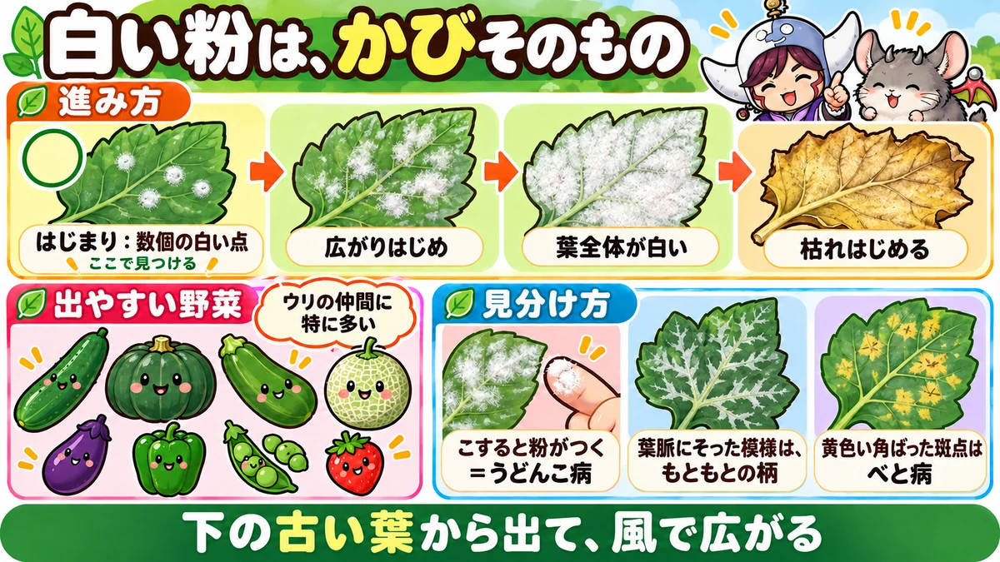
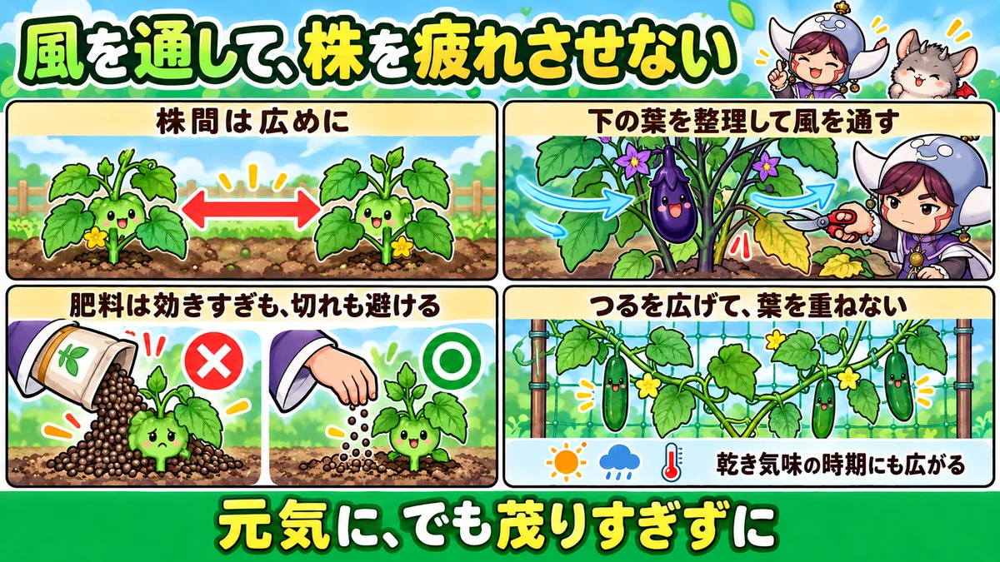
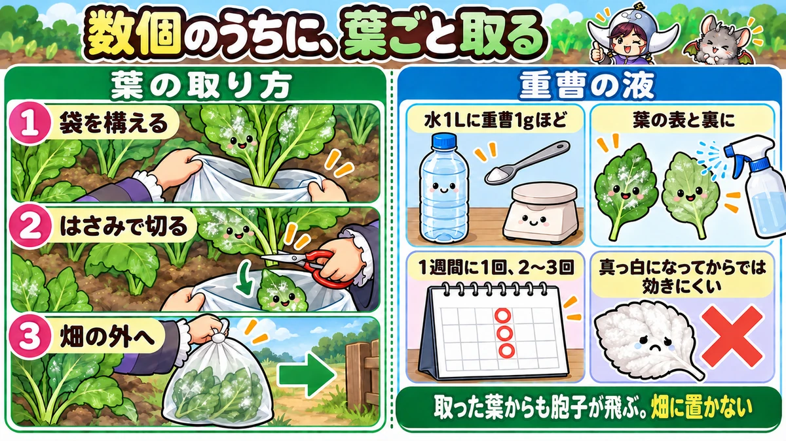

うどんこ病対策の決定版｜白い粉の正体、出やすい野菜と時期、薬を使わない予防と初期の手当て
📖 この記事の目次
この記事で分かること
- うどんこ病は、かびの病気です。葉の表面に白い粉をまぶしたような斑点が出て、やがて葉全体が白くなります。
- かびが葉の表面をおおうと、光合成ができなくなり、株が弱って、実のつきも悪くなります。
- 出やすいのは、きゅうり、かぼちゃ、ズッキーニ、メロンなどのウリの仲間。なすやピーマン、えんどう、いちごなどにも出ます。
- ほかの多くのかびの病気と違い、乾き気味の時期にも広がります。風通しの悪さ、肥料の効きすぎ、株の疲れが引き金になります。
- 予防は、株間を広めにとる、下の葉を整理して風を通す、肥料を入れすぎない、株を疲れさせないこと。
- 白い斑点が数個のうちに、その葉を取る。重曹をうすめた液を使う方法もあります。葉全体が真っ白になってからでは、手当てがむずかしくなります。
夏、きゅうりやかぼちゃの葉に、ふと白い粉のようなものがついているのに気づく。最初は小さな点だったのに、数日たつと葉一面が白くなり、下の葉から順にかさかさに枯れていく。家庭菜園で、とてもよく出会う病気です。
うどんこ病は、身近なわりに、「なぜ出るのか」「どうすれば防げるのか」が分かりにくい病気でもあります。白い粉が目立ってきたころには、すでに株のあちこちに広がっていることも多く、「気づいたときには手遅れ」と感じやすい病気です。けれども、出やすい場所と時期を知っていれば、白い斑点が数個のうちに見つけることができます。この記事では、うどんこ病の正体から、出やすい野菜と時期、薬を使わない予防、見つけたときの手当て、似た症状との見分け方まで、順番に書いていきます。
早見：うどんこ病の基本
見た目
- 葉の表に、白い粉をまぶしたような、丸い斑点が出る
- 斑点がつながって、葉全体が白くおおわれる
- 下の古い葉から出はじめ、上の葉へ広がる
- ひどくなると、葉が黄色くなり、かさかさに枯れる
出やすい野菜
- ウリの仲間：きゅうり、かぼちゃ、ズッキーニ、メロン、スイカ、ゴーヤ
- ナスの仲間：なす、ピーマン、トマト（夏の後半、株が疲れてきたころ）
- 豆の仲間：えんどう、スナップエンドウ（春の収穫期）
- そのほか：いちご、オクラなど
出やすい条件
- 株が混みあって、風通しが悪い
- 日当たりが悪い
- 肥料、とくに窒素が効きすぎて、株がやわらかい
- 収穫が続いて、株が疲れてきた
- 雨が少なく乾き気味の時期、昼と夜の気温差が大きい時期
やること
- 植えるときは、株間を広めに
- 下の葉、混んだ葉を整理して、風を通す
- 肥料を入れすぎない。株を疲れさせない（水切れ、肥料切れも避ける）
- 白い斑点が数個のうちに、その葉を取る
- 必要なら、重曹をうすめた液をかける

うどんこ病という病気
白い粉の正体
うどんこ病の白い粉は、かびそのものです。かびの糸と、その先にできる、たくさんの小さな胞子が、白い粉のように見えています。うどんを打つときの粉をまぶしたように見えることから、この名前がつきました。
うどんこ病のかびは、生きている植物の葉の表面にとりついて、そこから養分を吸って育ちます。葉の中まで深くもぐりこむのではなく、表面に広がっていくのが特徴です。
何が困るのか
かびが葉の表面をおおうと、葉に日の光が届かなくなり、光合成が十分にできなくなります。葉が作る養分が減るので、株はだんだん弱っていきます。
- 実のつきが悪くなる、実が大きくならない
- きゅうりなら、曲がった実や、先のほうが細くなった実が増える
- 下の葉から黄色くなって枯れ、株全体が早く終わってしまう
すぐに株が枯れる病気ではありませんが、気づかずにいると、収穫できる期間がぐっと短くなります。
どうやって広がるのか
白い粉の正体である胞子は、とても軽く、風に乗って飛んでいきます。1枚の葉に出たうどんこ病は、そこからとなりの葉へ、となりの株へと、風で広がっていきます。
だから、白い斑点が数個のうちに、その葉を取ってしまうことが大切です。白い粉がたくさんついた葉を放っておくと、そこが胞子の出どころになって、まわりへ広がり続けます。
野菜の仲間ごとに、かびの種類が違う
うどんこ病は、ひとまとめに呼ばれていますが、原因になるかびには、いくつもの種類があります。そして、かびの種類によって、とりつける野菜の仲間がだいたい決まっています。
たとえば、かぼちゃやきゅうりについたうどんこ病が、そのまますぐとなりのさつまいもに移る、ということは、ふつうは起きません。一方で、きゅうりとかぼちゃ、メロンのように、同じウリの仲間どうしでは、移りやすいと考えておきます。同じ仲間の野菜を近くに植えているときは、まとめて見回ります。
病気の進み方
うどんこ病は、だいたい次のように進んでいきます。段階ごとに、やることが変わります。
- はじまり：下のほうの葉に、直径数mmほどの、白い粉の小さな丸い斑点がぽつぽつ出る。この段階なら、その葉を取るだけで止まることも多い
- 広がりはじめ：斑点が増え、つながって、葉の一部が白くおおわれる。となりの葉や、上の葉にも斑点が出はじめる。葉を取り、重曹の液を使う
- 広がったあと：葉全体が白くなり、黄色くなって、かさかさに枯れはじめる。株の下半分の葉が白い。白い葉を少しずつ取り、残った葉を守る
- 終わりごろ：株全体が白くなり、実のつきが目に見えて悪くなる。収穫が終わっていれば、株ごと片づける
「はじまり」から「広がりはじめ」までは、条件がそろうと、ほんの数日です。下の葉を見る習慣があれば、「はじまり」の段階で気づけます。
出やすい時期と条件
春から秋まで、長く出る
うどんこ病は、春から秋まで、長い期間にわたって出ます。野菜ごとに、出やすい時期の目安は次のとおりです。
- えんどう、スナップエンドウ：4〜5月、収穫が盛んになって株が茂ってきたころ
- きゅうり、かぼちゃ、ズッキーニ：梅雨の前後から夏、収穫が続いて株が疲れてきたころ
- なす、ピーマン：夏の後半から秋、株が疲れてきたころ
- 秋のきゅうりなど：秋の初め、昼と夜の気温差が大きくなるころ
乾き気味でも広がる
かびの病気というと、雨が続いてじめじめしたときに出るものを思い浮かべます。実際、べと病などの多くの病気は、湿気が多いと増えます。
ところが、うどんこ病は、ほかの病気に比べて、やや乾き気味の時期にも広がりやすい病気です。梅雨に雨が少ない年、雨のあとからりと晴れた日が続くとき、秋に乾いた日が続くとき、昼と夜の気温差が大きいときなどに、出やすくなると言われています。
「乾かしておけば病気は出ない」と思っていると、うどんこ病だけは見落としやすいので、注意してください。
風通しが悪いと出やすい
株が混みあっていると、葉と葉の間の空気がよどみ、うどんこ病が出やすくなります。また、下の葉は日が当たりにくく、古くなっていて、うどんこ病が最初に出やすい場所です。うどんこ病が下の葉から出はじめるのは、このためです。
肥料が効きすぎると出やすい
肥料、とくに窒素が多すぎると、葉や茎がやわらかく育ち、病気にかかりやすくなります。葉の色が濃すぎる、葉が大きくて茂りすぎている、というときは、肥料が効きすぎているかもしれません。
一方で、肥料が足りずに株が弱っているときも、病気にかかりやすくなります。うどんこ病は、「元気に、でも茂りすぎずに」育てることが、いちばんの予防になります。
株が疲れると出やすい
収穫が続いて株が疲れてくると、うどんこ病にかかりやすくなります。夏の後半に、なすやピーマン、きゅうりの下の葉に出てくるのは、そのためです。水切れや肥料切れで株が弱ったときも同じです。
月ごとの見回りの目安（一般的な地域）
- 3〜4月：トンネルの中のえんどう、スナップエンドウ。混みあってきたら下のほうを見る
- 4〜5月：えんどうの収穫期。下の葉の白い斑点に注意。夏野菜の苗を植えるときは株間を広めに
- 6月：きゅうり、かぼちゃ、ズッキーニの下の葉を見はじめる。梅雨に雨が少ない年は特に
- 7〜8月：ウリの仲間の最盛期。収穫が続いて株が疲れるころ。なす、ピーマンの下の葉も見る
- 9〜10月：秋のきゅうり、夏から続くなすやピーマン。昼と夜の気温差が大きくなり、乾いた日が続くと出やすい
- 11月：夏野菜の片づけ。白い葉やつるを畑に残さない
見る場所はいつも同じで、「下の古い葉」と「株の内側の混んだ葉」です。
薬を使わない予防
1．株間を広めにとる
植えるときに、株と株の間を、ふだんより少し広めにとります。たとえば、ふつうは60cmほどの株間で植えるきゅうりを、80cmほどあけて植える、という人もいます。株が大きく育っても、葉と葉が重なりにくくなり、風が通りやすくなります。
植える本数は減りますが、そのぶん病気が出にくくなり、1株からの収穫が長く続くので、結果として収穫量が変わらないこともあります。
2．下の葉、混んだ葉を整理する
株が大きくなってきたら、下の葉や、混みあった葉を取って、風を通します。
- 地面にふれそうな下の葉
- 黄色くなった古い葉
- 株の内側で重なりあっている葉
なすやピーマン、トマトなどは、株元から30cmくらいまでの下の葉がなくなるくらいに整理すると、風通しがぐっとよくなります。上に十分な葉があれば、下の葉を取っても、光合成の量が足りなくなることはありません。
ただし、一度にたくさんの葉を取りすぎると、株が弱ります。数日かけて、少しずつ整理していきます。
3．つるや茎を整理する
えんどうやスナップエンドウは、春に茂ってくると、株の中の風通しが悪くなります。収穫が終わって、先に花が残っていない茎や、細くて実の小さい茎は、根元から切って、すき間を作ります。先に花が咲いている茎は残します。
きゅうりやかぼちゃも、つるが重なって茂りすぎたら、実のついていないつるや、重なったつるを整理します。
4．肥料は、効きすぎも、切れも避ける
元肥や追肥は、決められた量を守ります。「早く大きくしたい」と肥料を重ねると、株がやわらかく茂りすぎて、うどんこ病が出やすくなります。
反対に、収穫が続く野菜は、肥料が切れると株が疲れて、うどんこ病が出やすくなります。追肥は、量を守って、時期を外さずに続けます。
5．水切れさせない
夏の乾いた時期に水が切れると、株が弱ります。雨が降らない日が続いたら、朝か夕方に、株元にたっぷり水をやります。葉の上からではなく、株元にやります。
6．株が若いうちに収穫を進める
かぼちゃなどは、早めに植えて、株が若く元気なうちに実をつけさせると、うどんこ病が増えてくる夏の後半までに収穫を進められます。株が弱ってからでは、うどんこ病に負けやすくなります。
7．強い品種を選ぶ
きゅうり、かぼちゃ、スナップエンドウなどには、「うどんこ病に強い」とうたった品種があります。毎年うどんこ病で困っている場合は、苗やタネを選ぶときに、品種の説明を見てみてください。強い品種でも、まったくかからないわけではないので、ほかの予防と組み合わせます。
8．つるや枝を、支柱とネットで広げる
きゅうりやゴーヤなどのつる性の野菜は、支柱とネットにつるを広げて誘引すると、葉が重なりにくくなります。つるが1か所に固まると、その内側で空気がよどみ、うどんこ病が出やすくなります。伸びてきたつるは、ネットの空いているところへ、こまめに振り分けます。
なすやピーマンも、枝が込み合ったら、内側に向かって伸びる枝や、重なった枝を整理して、株の中に光と風が入るようにします。
9．植える場所を選ぶ
畑の中でも、建物や木の陰になる場所、塀ぎわで風が通りにくい場所は、うどんこ病が出やすくなります。ウリの仲間のように、毎年うどんこ病で困る野菜は、なるべく日当たりと風通しのよい場所に植えます。
10．苗の段階から見ておく
買ってきた苗の下の葉に、白い粉の斑点がついていることがあります。苗を選ぶときは、葉の表と裏を見て、白い粉がないものを選びます。タネから苗を育てる場合も、ポットどうしを詰めて並べると、葉が重なって病気が出やすくなるので、苗が育つにつれて間をあけていきます。

見つけたときの手当て
まず、毎日の見回りで早く見つける
うどんこ病は、早く見つけるほど、手当てが楽です。白い斑点が数個のうちなら、その葉を取るだけで、広がりを止められることがあります。
見回りでは、次のところを重点的に見ます。
- 下のほうの古い葉
- 株の内側の、混みあった葉
- 葉の表だけでなく、葉の裏や、茎、葉のつけ根
1．白い斑点の出た葉を取る
白い斑点が出た葉は、はさみで切り取ります。
- 取った葉は、畑に置かずに、袋に入れて畑の外へ持ち出します。置いておくと、そこから胞子が飛びます。
- 葉を取るときは、白い粉を飛ばさないよう、そっと扱います。
- 1枚の葉に1〜2個の小さな斑点なら、その葉を取るだけで様子を見ます。
葉の取り方の手順
1．はさみを用意します。手でちぎると、葉が揺れて白い粉が飛びやすくなります。
2．取る葉の下に、袋の口を広げて構えます。
3．葉のつけ根（葉柄）を、はさみで切ります。葉を袋の中に落とすようにすると、粉が飛び散りにくくなります。
4．取り終わったら、袋の口をしばって、畑の外へ持ち出します。
5．使ったはさみは、ほかの株に使う前に、布で拭いておきます。
風の強い日は粉が飛びやすいので、風の弱い日の朝などに作業します。
2．重曹をうすめた液をかける
重曹（炭酸水素ナトリウム）は、食酢などと同じく、安全性がはっきりしているとして、農薬取締法の「特定防除資材」に指定されています。うどんこ病の手当てに、重曹をうすめた液を使う方法がよく知られています。
- うすさは、水1Lに重曹1gほど（0.1%ほど）が目安です。濃くすると、葉が傷むことがあります。
- よく溶かして、スプレーで、葉の表と裏にかけます。白い斑点の出ているところを中心に、まわりの葉にもかけます。
- 1回では効き目が出にくいので、1週間に1回くらい、2〜3回くり返します。
- 日差しの強い真昼は避け、朝か夕方にかけます。
- 初めて使うときは、一部の葉で試してから広げます。
重曹の液は、葉全体が真っ白になってからでは効きにくく、白い斑点が出はじめたころに使うものです。また、市販の食品用の重曹を使うときは、ほかの成分の混ざっていないものを選びます。
重曹の液の作り方
1．スプレーボトルや、空のペットボトルを用意します。
2．水の量に合わせて重曹を量ります。水1Lなら1g、2Lなら2gほどです。小さじ1杯はおよそ4〜5gなので、ごく少しの量になります。台所用のはかりで量ると確実です。
3．少量のぬるま湯で重曹をよく溶かしてから、残りの水を加えます。溶け残りがあると、スプレーが詰まったり、濃さにむらが出たりします。
4．作った液は、その日のうちに使い切ります。
かけるときは、葉からしずくがたれるくらい、表にも裏にもしっかりかけます。白い斑点のある葉だけでなく、そのまわりの葉にもかけておきます。雨の直前にかけると流れてしまうので、晴れが続きそうな日を選びます。
3．食酢をうすめた液
食酢を水でうすめた液をかける方法もあります。食酢も、重曹と同じ特定防除資材です。濃いと葉を傷めるので、うすめに作り、一部の葉で試してから使います。
4．葉が真っ白になったら
葉の大部分が白くおおわれてしまった葉は、もう光合成でほとんど役に立たず、液をかけても元に戻りません。思い切って取って、畑の外へ片づけます。
株全体が白くなってしまい、収穫もほとんど終わっている場合は、株ごと片づけることも考えます。そのまま置いておくと、近くの株への胞子の出どころになるからです。
市販のものを使う場合
手当てが追いつかない場合は、うどんこ病に使える市販の資材もあります。微生物を使ったものなど、有機栽培で使えるものもあります。使う場合は、ラベルに書かれた野菜の名前と使い方を、必ず確かめてください。

季節の終わりの片づけ
株を畑に残さない
夏野菜の収穫が終わったら、うどんこ病の出た株は、つるや葉を残さず片づけます。白い粉のついた葉やつるをうねの上に積んでおくと、近くで育っている秋の野菜への胞子の出どころになります。片づけた株は、畑の外へ持ち出すか、まわりに野菜のない場所で処分します。
次の年への準備
うどんこ病が多かった年は、次の年に向けて、次のことを見直しておきます。
- 株間は十分だったか
- 下の葉の整理は、早めにできていたか
- 元肥や追肥が多すぎなかったか
- 収穫の終わりごろに、株が疲れきっていなかったか
- 品種は、うどんこ病に強いものだったか
うどんこ病は、毎年少しずつ育て方を変えることで、出方が大きく変わる病気です。その年に気づいたことを、栽培の記録に残しておくと役に立ちます。
トンネルやベランダでの注意
春のえんどうや、秋のきゅうりなどをトンネルの中で育てていると、中の空気がこもって、うどんこ病が出やすくなります。暖かい日の日中は、すそを開けて風を通します。
ベランダでは、壁ぎわに置いたプランターや、ひさしの下で日の当たりにくい場所で出やすくなります。プランターを壁から少し離し、プランターどうしの間もあけて、空気が流れるようにします。
似た症状との見分け方
べと病
きゅうりなどでよく見る、もう1つのかびの病気です。葉の表に、葉脈に区切られた、角ばった黄色い斑点が出ます。葉の裏には、灰色っぽいかびが見えることもあります。
うどんこ病と違い、雨が続く、湿気の多い時期に広がりやすい病気です。見つけたら、斑点の出た葉を早めに切って、畑の外へ片づけます。うどんこ病の白い粉は葉の表にふいたように見え、べと病は黄色い角ばった斑点、と覚えておくと見分けやすくなります。
もともとの葉の模様
ズッキーニや、一部のかぼちゃの品種には、葉脈にそって、白っぽい銀色の模様が、もともと入っているものがあります。これは病気ではありません。
見分けるには、指で軽くこすってみます。うどんこ病の白い粉なら、指に粉がつき、こすったところがはがれます。もともとの模様なら、こすっても変わりません。また、もともとの模様は、葉脈にそってきれいに入っていて、若い葉にも同じように出ています。
アブラムシのぬけがら
アブラムシのぬけがらも、葉の上に白い粒のように見えることがあります。こちらは、小さな粒がばらばらと落ちている感じで、粉が葉に広がっている感じではありません。葉の裏にアブラムシがいないかも見てみてください。
ハダニ
ハダニがつくと、葉の表に、白っぽい小さな点がかすれたように広がります。うどんこ病の粉とは違い、こすっても粉はつきません。葉の裏に、とても小さな虫や、細い糸が見えることがあります。乾燥した時期に増えるのは、うどんこ病と同じです。
灰色かび病
花や実、傷んだ葉に、灰色の、ふわふわした綿のようなかびが生える病気です。うどんこ病の白い粉は、葉の表にうすく平らに広がるのに対し、灰色かび病のかびは、毛足が長く、もこもこと盛り上がって見えます。雨が続いて湿気が多いときに出やすく、咲き終わった花びらや、傷んだ実から始まることが多い病気です。咲き終わった花がらや、傷んだ実を早めに取り除いて防ぎます。
葉についた汚れ
雨で跳ね上がった土や、まいた石灰、ほこりが葉について、白っぽく見えることもあります。この場合は、水で流せば落ちますし、斑点のような丸い形にはなりません。うどんこ病は、水で流しても粉の下のかびが残り、数日でまた白くなってきます。
すす病
葉の表が、白ではなく、黒いすすをかぶったようになる病気です。アブラムシなどが出す甘い液に、黒いかびが生えたものです。見た目の色がまったく違うので、まちがえることは少ないですが、どちらも葉の表をおおって光合成をじゃまする点は同じです。すす病の場合は、もとになっている虫を減らすことが手当てになります。
野菜ごとの注意
きゅうり
うどんこ病がとても出やすい野菜です。株間を広めにとり、下の葉を整理し、肥料の効きすぎと切れの両方に気をつけます。曲がった実や、先の細い実が増えてきたら、葉の状態も見てみてください。
かぼちゃ、ズッキーニ
葉が大きく、つるが重なりやすい野菜です。つるの整理と、早めの植えつけで、株が元気なうちに収穫を進めます。ズッキーニは、もともとの葉の模様とまちがえないよう、こすって確かめます。
メロン、スイカ
実が育つ時期にうどんこ病が広がると、実の甘さにも影響します。下の葉から見回って、早めに葉を取ります。
なす、ピーマン、トマト
夏の後半、株が疲れてきたころに出やすくなります。株元から30cmくらいまでの下の葉を整理して風を通し、追肥と水やりで株を疲れさせないようにします。
えんどう、スナップエンドウ
春、収穫が盛んになって株が茂るころに、下のほうから出てきます。収穫が終わった茎や細い茎を切って、風を通します。毎年出る場合は、うどんこ病に強い品種を選ぶのも1つの方法です。
いちご
株元の古い葉や、枯れた葉をこまめに取って、風通しを保ちます。
オクラ
夏の後半、下のほうの葉に白い粉が出ることがあります。収穫した実の下の葉は、取っても株への影響が少ないので、収穫のたびに下の葉を整理しておくと、風通しがよくなり、うどんこ病の予防にもなります。
ゴーヤ
ゴーヤは比較的じょうぶな野菜ですが、緑のカーテンなどで葉が重なりあって茂ると、内側の葉にうどんこ病が出ることがあります。つるを広げて誘引し、葉が何重にも重ならないようにします。
説明が分かれるところ
乾燥で出るのか、湿気で出るのか
「うどんこ病は乾燥すると出る」という説明と、「湿気が多いと出る」という説明の、両方を見かけます。実際には、湿気の多い時期があったあとに、乾いた日が続くと広がる、昼と夜の気温差が大きいときに出やすい、など、条件が重なって出ることが多いようです。どちらか一方だけで考えず、「風通しをよくし、株を元気に保つ」という基本で備えるのが確実です。
重曹の液はどのくらい効くか
重曹の液は、白い斑点が出はじめた初期に使うと効き目が出やすい一方、広がってからでは効きにくい、という点では多くの説明が一致しています。予防として定期的にかける人もいれば、出てからかける人もいます。濃すぎると葉が傷むので、うすめに作ることが共通の注意です。
白い葉は全部取るか、残すか
白い斑点が出た葉はすぐに取る、という考え方と、葉を一度にたくさん取ると株が弱るので、ひどい葉から少しずつ取る、という考え方があります。斑点が少ない時期は葉を取って広がりを止め、株全体に広がっている場合は、ひどい葉から少しずつ取る、と使い分けるのがよいでしょう。
よくある失敗
白い葉を放っておいた
うどんこ病の葉は、まわりに胞子をまき続けます。数個の斑点のうちに取るのが、いちばん少ない手間です。
取った葉を、畑に置いておいた
取った葉からも胞子が飛びます。袋に入れて、畑の外へ持ち出します。
株を詰めて植えた
たくさん植えたほうがたくさん穫れる、と思って詰めて植えると、葉が重なって、うどんこ病が出やすくなります。株間は、広めくらいがちょうどよいです。
肥料で元気にしようとした
うどんこ病が出た株に、元気づけようと肥料をたくさん入れると、かえって葉がやわらかく茂って、広がりやすくなることがあります。肥料は、決められた量を守ります。
重曹を濃くしすぎた
効かせようとして重曹を濃くすると、葉が傷むことがあります。水1Lに1gほどを目安にします。
よくある質問
雨が降ったら、重曹の液はかけ直しますか
かけた直後に雨が降ると、液が流れてしまいます。かけてから半日ほどで雨が降った場合は、晴れた日にかけ直してかまいません。毎日のようにかける必要はなく、1週間に1回くらいを目安にします。
牛乳をかける方法を聞きました
牛乳を水でうすめてかけると、うどんこ病が広がりにくくなった、という話もあります。ただ、牛乳は葉に残ると、においが出たり、ほかのかびが生えたりすることがあります。試すなら、うすめに作って一部の葉で試し、晴れた日に使ってください。重曹や食酢のように、安全性がはっきりした資材として指定されているものではありません。
収穫の終わりかけに出たら、どうしますか
収穫がほとんど終わっている株なら、無理に手当てを続けるより、残りの実を早めに穫って、株ごと片づけるほうが、まわりの野菜のためになります。まだ収穫が続く株なら、白い葉を少しずつ取りながら、上の元気な葉を守ります。
うどんこ病の出た野菜は食べられますか
実を洗って食べてかまいません。うどんこ病は、野菜の葉や茎にとりつくかびで、人にうつる病気ではありません。ただ、実にも白い粉がついている場合は、よく洗い流してください。
毎年同じ場所で出ます
胞子は風で飛んでくるので、同じ場所だから出る、というよりも、毎年同じような育て方や、同じような風通しの条件になっていることが多いと考えられます。株間、下葉の整理、肥料の量を見直し、強い品種も試してみてください。
プランターでも出ますか
出ます。ベランダは風通しがよい場所もありますが、壁ぎわなど空気がよどむ場所や、日当たりの悪い場所では出やすくなります。プランターどうしの間をあけ、葉が重ならないように置きます。
葉を取りすぎたら、株は弱りませんか
一度にたくさん取ると弱ります。白い斑点が出た葉と、下のほうの古い葉から、数日に分けて少しずつ取ります。上のほうの元気な葉は残します。
学ぶ：うどんこ病のしくみ🔬
なぜ、生きた葉の表面にだけ広がるのか
うどんこ病のかびは、生きている植物からしか養分をとれないかびです。枯れた葉の上では育つことができません。そのため、葉の中を腐らせて枯らすのではなく、葉の表面に広がって、生きたまま少しずつ養分を吸い続けます。
葉が白くおおわれても、すぐには枯れないのは、このためです。ただ、そのあいだにも光合成の量は減り続け、株は少しずつ弱っていきます。「すぐ枯れないから大丈夫」ではなく、「じわじわ効いてくる病気」だと考えてください。
なぜ、乾き気味でも広がるのか
多くのかびは、胞子が芽を出すのに、葉の上に水のしずくが必要です。だから、雨や朝露が多い時期に広がります。
うどんこ病のかびは、葉が水でぬれていなくても、空気中にある程度の湿り気があれば、胞子が芽を出せると言われています。さらに、乾いた晴れの日には、胞子が風に乗って飛びやすくなります。夜に湿り気があり、昼は乾いて晴れる、昼と夜の気温差が大きい時期に広がりやすいのは、このためです。
なぜ、窒素が多いと出やすいのか
窒素が多いと、植物は葉や茎を大きく、早く育てようとします。そのぶん、葉の表面の守りが十分にできあがらず、やわらかい葉になります。かびにとっては、とりつきやすく、養分も吸いやすい葉です。さらに、葉が大きく茂ることで風通しも悪くなります。肥料の効きすぎが、二重にうどんこ病を呼びこむのです。
なぜ、重曹が使われるのか
重曹の液は、水にとかすと弱いアルカリ性になります。葉の表面にかけると、表面の環境が変わり、うどんこ病のかびが育ちにくくなる、と考えられています。うどんこ病のかびは葉の表面に広がっているので、表面にかけた液が届きやすい、というのも理由の1つです。
ただし、葉の中まで入りこんだかびを消すような力はなく、白い粉が葉一面に広がってからでは、効き目は限られます。重曹の液が「初期に使うもの」と言われるのは、このためです。濃くすると、葉の表面そのものが傷むので、うすく使うことが大切です。
なぜ、下の葉から出るのか
下の葉は、株の中でいちばん古い葉です。古い葉は、若い葉に比べて病気への守りが弱くなっています。そのうえ、上の葉の陰になって日が当たりにくく、地面に近いので空気もよどみがちです。うどんこ病のかびにとって、とりつきやすい条件がそろっている場所なのです。
だから、下の葉の整理は、ただ風を通すだけでなく、うどんこ病が最初にとりつく場所をなくすことにもなります。見回りのときに、まず下の葉から見るのも、同じ理由です。
なぜ、株が疲れると出やすいのか
実をたくさんつけている株は、葉で作った養分の多くを、実を太らせるのに使っています。収穫が続いて株が疲れてくると、葉を守るために回せる養分が減り、病気への守りが弱くなります。
夏の後半に、なすやきゅうりの葉にうどんこ病が増えてくるのは、季節の条件に加えて、株そのものが疲れているからです。追肥と水やりで株の元気を保つこと、とりすぎない程度に実を早めに収穫して株の負担を減らすことが、病気の予防にもつながります。
まとめ
ここまで読んでくださって、ありがとうございます！
うどんこ病対策のポイントを、もう一度まとめておきます。
- 白い粉は、かびそのもの。葉の表面をおおって光合成をじゃまし、株を弱らせる
- 胞子は風で飛ぶ。数個の斑点のうちに、その葉を取って畑の外へ
- ウリの仲間に特に出やすい。なす、ピーマン、えんどう、いちごなどにも出る
- 乾き気味の時期、昼と夜の気温差が大きい時期にも広がる
- 予防は、株間を広めに、下の葉と混んだ葉を整理、肥料は効きすぎも切れも避ける、水切れさせない
- 重曹は水1Lに1gほど。初期に、葉の表と裏に、1週間に1回くらい2〜3回
- 真っ白になった葉は、取って片づける
- べと病（黄色い角ばった斑点）、葉の模様、ハダニとまちがえない。指でこすって確かめる
- つるや枝は支柱とネットで広げ、葉を重ねない。苗を買うときも下の葉を見る
- 収穫が終わった株は、白い葉やつるを残さず片づけて、次の年の育て方を見直す
- 葉を取るときは、袋を構えてはさみで切る。粉を飛ばさない
うどんこ病は、完全に防ぐのはむずかしい病気ですが、早く見つけて、風の通る株に育てれば、収穫を長く続けることができます。まずは今度の見回りで、いちばん下の古い葉を何枚か、表も裏も見てみてください🔍
園芸ばさみ
白い斑点の出た葉は、手でちぎらず、はさみで切り取ると粉が飛び散りにくくなります。
![[商品価格に関しましては、リンクが作成された時点と現時点で情報が変更されている場合がございます。]](https://hbb.afl.rakuten.co.jp/hgb/56d22030.def85fa7.56d22031.b89fde86/?me_id=1250472&item_id=10022339&pc=https%3A%2F%2Fthumbnail.image.rakuten.co.jp%2F%400_mall%2Fplantz%2Fcabinet%2F01%2Ft-13.jpg%3F_ex%3D240x240&s=240x240&t=picttext "[商品価格に関しましては、リンクが作成された時点と現時点で情報が変更されている場合がございます。]")

きゅうりネット
つるを広げて誘引すると、葉が重ならず、風が通ります。
![[商品価格に関しましては、リンクが作成された時点と現時点で情報が変更されている場合がございます。]](https://hbb.afl.rakuten.co.jp/hgb/56d221a0.da732c49.56d221a1.b57a6709/?me_id=1230952&item_id=10006162&pc=https%3A%2F%2Fthumbnail.image.rakuten.co.jp%2F%400_mall%2Fnou-nou%2Fcabinet%2Fnousi2%2F0108008000005.jpg%3F_ex%3D240x240&s=240x240&t=picttext "[商品価格に関しましては、リンクが作成された時点と現時点で情報が変更されている場合がございます。]")
支柱
なすやピーマンの枝を支えて広げ、株の中に光と風を入れます。
![[商品価格に関しましては、リンクが作成された時点と現時点で情報が変更されている場合がございます。]](https://hbb.afl.rakuten.co.jp/hgb/56d221a0.da732c49.56d221a1.b57a6709/?me_id=1230952&item_id=10017113&pc=https%3A%2F%2Fthumbnail.image.rakuten.co.jp%2F%400_mall%2Fnou-nou%2Fcabinet%2F5010356000109-01.jpg%3F_ex%3D240x240&s=240x240&t=picttext "[商品価格に関しましては、リンクが作成された時点と現時点で情報が変更されている場合がございます。]")
次に読む
記事一覧へ